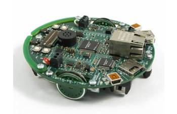

Conception et développement d’un système autonome inspiré du jeu Pong, implémenté sur robot EvalBot. Le robot agit comme une “balle intelligente” évoluant dans une arène, avec gestion des collisions, des scores et des comportements pseudo-aléatoires. L’ensemble du projet est réalisé en assembleur ARM afin de contrôler directement les registres matériels, GPIO et PWM.
Le robot démarre dans une direction aléatoire, se déplace dans l’arène et rebondit sur les obstacles. Lorsqu’il entre dans une zone “but”, un point est attribué à l’adversaire. Le jeu s’arrête lorsqu’un joueur atteint 5 points.
Le programme initialise les ports GPIO et les modules PWM, puis lance les moteurs.
Le robot avance en continu et réagit aux collisions :
• Bumper gauche → rotation droite
• Bumper droit → rotation gauche
• Double contact → demi-tour (180°)
Les boutons utilisateurs permettent d’incrémenter les scores,
affichés via les LEDs PF4 et PF5.
Le projet repose sur une architecture bas niveau exploitant directement les registres du microcontrôleur. Le PWM assure le contrôle précis des moteurs, tandis que le SysTick fournit une base de temps stable et une source d’aléa. Les GPIO sont utilisés en mode événementiel pour détecter les collisions et les inputs utilisateurs.